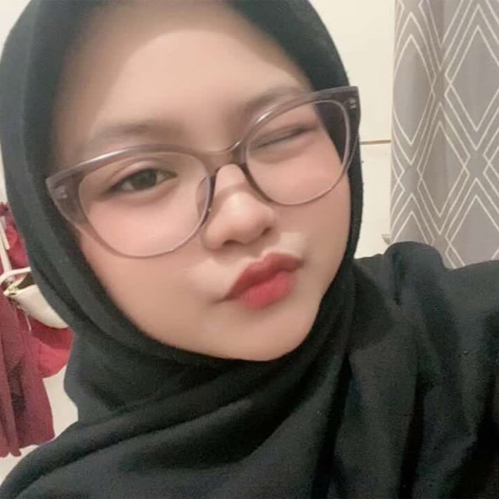
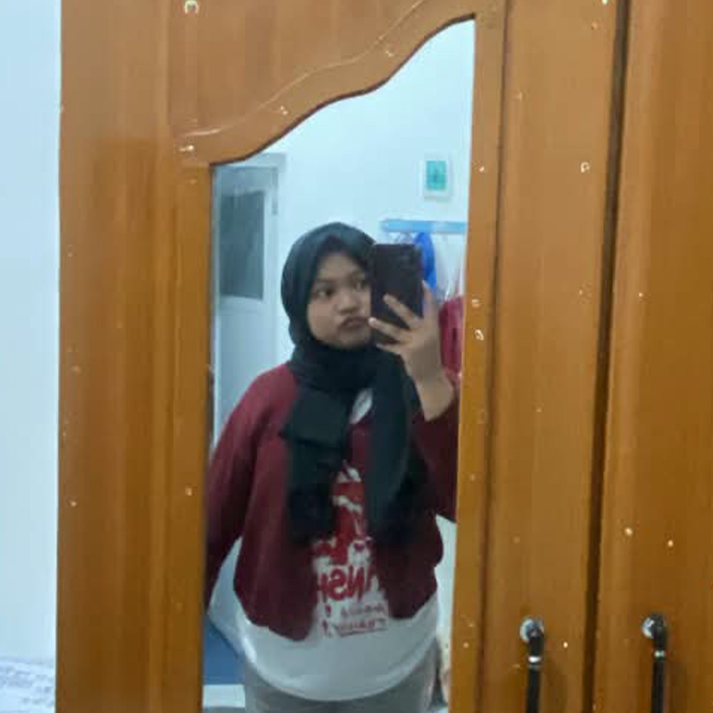
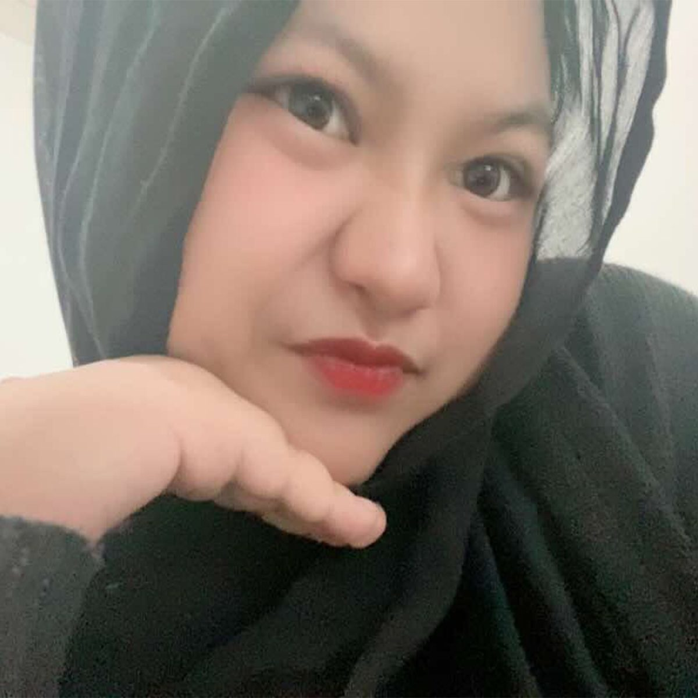
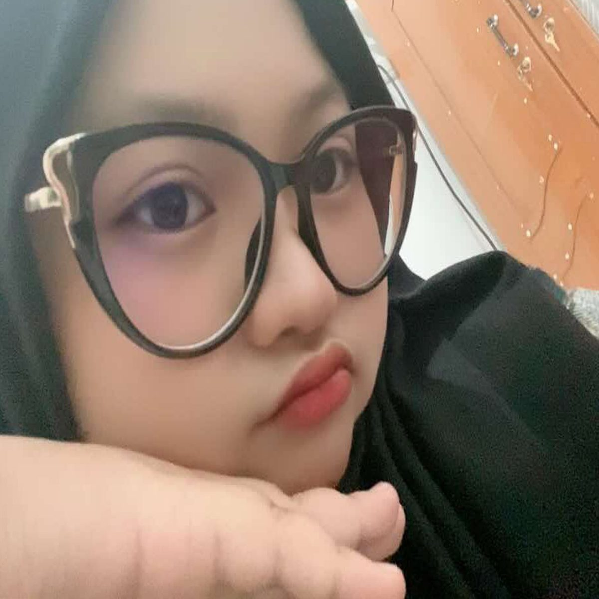
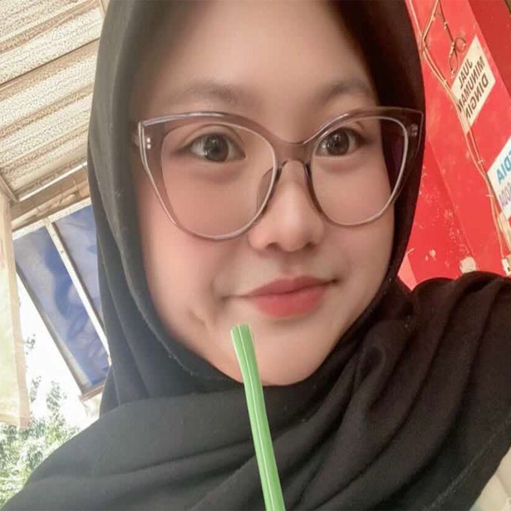
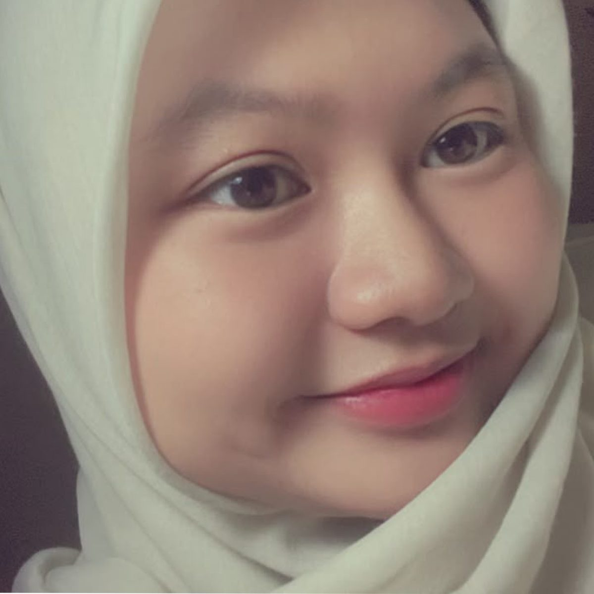
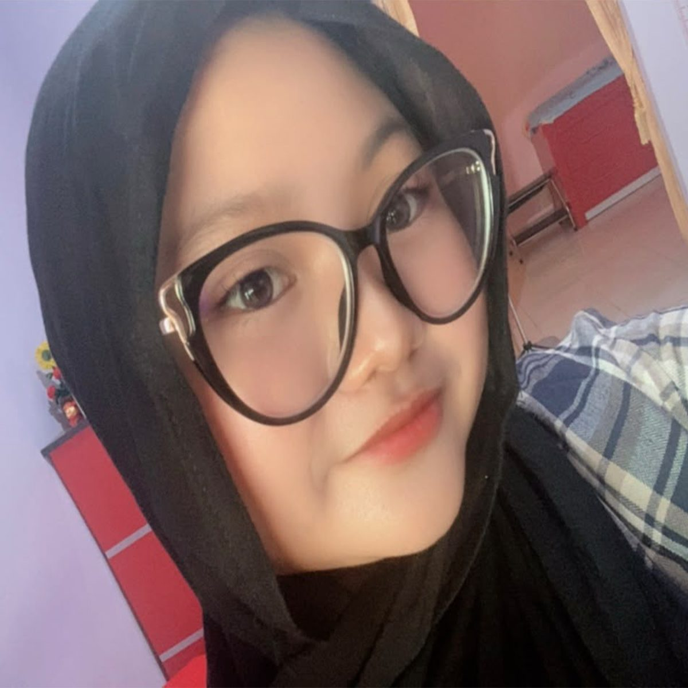
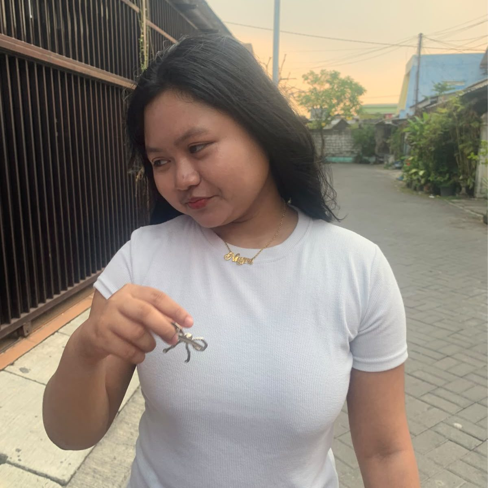
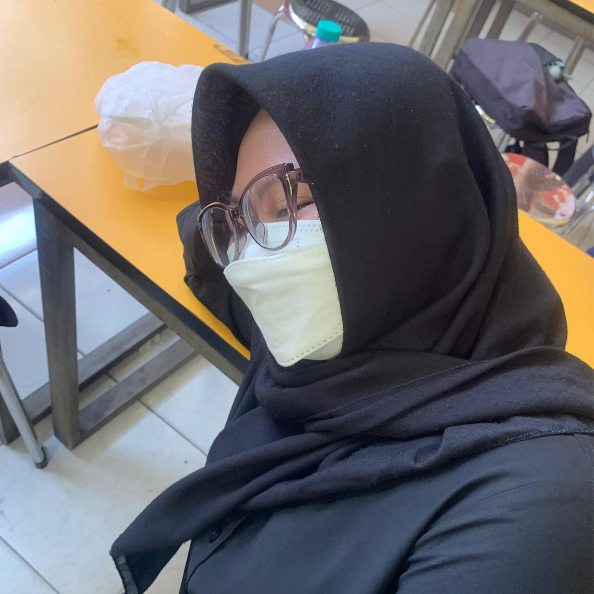
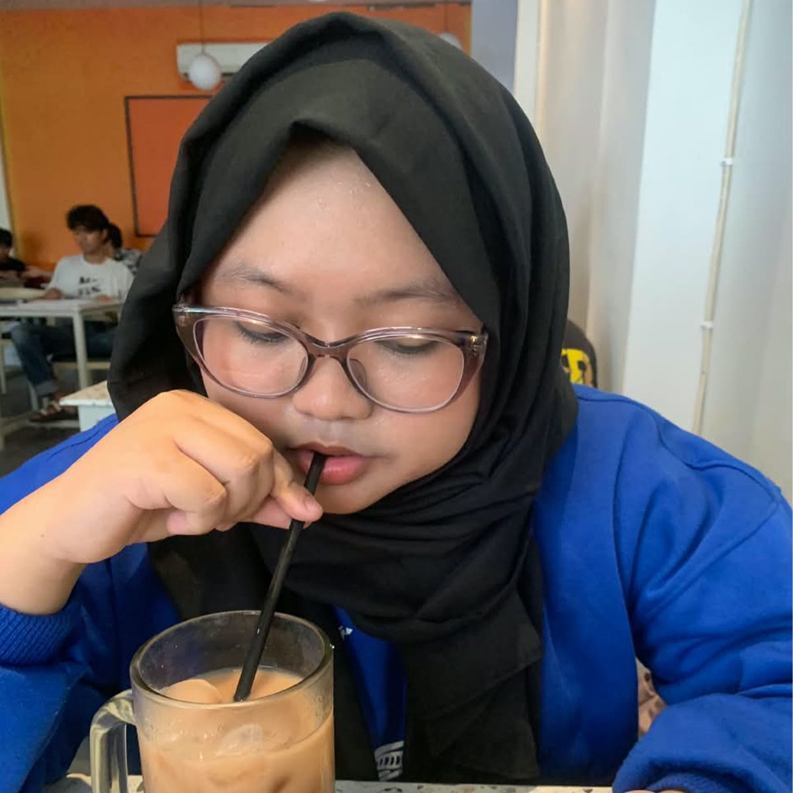

A little story about you
Sepuluh foto,
sepuluh cerita.
Aku ingin menyimpan beberapa momen kita di sini. Bukan karena foto-foto ini sempurna, tetapi karena setiap foto punya cerita dan perasaan yang berbeda.

Hal kecil yang akhirnya menjadi begitu berarti.
Dari sekian banyak orang yang bisa aku temui, aku bersyukur semesta mempertemukan aku dengan kamu. Mungkin awalnya sederhana, tapi ternyata kehadiranmu punya tempat yang istimewa di hidupku.
Senyummu selalu punya caranya sendiri.
Ada banyak hal yang bisa membuat hari menjadi lebih baik, tapi salah satunya adalah melihat kamu tersenyum. Semoga kamu selalu punya alasan untuk tersenyum, bahkan pada hari-hari yang terasa berat.


Aku suka hal-hal kecil tentang kita.
Bukan hanya momen besar yang ingin aku ingat. Percakapan sederhana, bercanda tanpa alasan, atau sekadar menghabiskan waktu bersama juga menjadi bagian yang ingin aku simpan baik-baik.
Terima kasih sudah hadir.
Terima kasih karena sudah menjadi bagian dari hari-hariku. Terima kasih untuk perhatian, kesabaran, cerita, dan semua hal kecil yang mungkin tidak selalu sempat aku ucapkan terima kasih.


Kamu tidak perlu menjadi sempurna.
Aku menyayangimu bukan karena kamu harus selalu baik-baik saja. Kamu boleh lelah, boleh takut, boleh punya hari yang buruk. Aku hanya berharap kamu tidak pernah lupa bahwa kamu berharga.
Semoga kita terus bertumbuh.
Semoga seiring waktu berjalan, kita bukan hanya semakin dekat, tetapi juga semakin dewasa dalam memahami, menghargai, dan menjaga satu sama lain.


Doaku sederhana, tapi sungguh-sungguh.
Semoga kamu selalu diberi kesehatan, umur yang panjang, hati yang tenang, rezeki yang luas, dan keberanian untuk mengejar semua impianmu. Semoga setiap langkahmu dipertemukan dengan banyak hal baik.
Semoga semua yang kamu impikan menemukan jalannya.
Aku ingin melihat kamu tumbuh menjadi versi dirimu yang paling bahagia. Jangan takut bermimpi besar. Kalau suatu hari kamu merasa ragu, semoga kamu ingat bahwa ada seseorang yang selalu percaya pada kamu.


Masih banyak cerita yang ingin aku tulis bersama kamu.
Sepuluh foto ini tentu tidak cukup untuk menceritakan semuanya. Masih ada banyak tempat, tawa, perjalanan, dan kenangan yang semoga suatu hari bisa kita tambahkan ke dalam cerita kita.
Kalau boleh berharap...
Aku berharap di antara banyak perubahan yang akan datang, kita tetap menemukan alasan untuk saling memilih, saling mendukung, dan saling mendoakan. Karena bersamamu, aku ingin terus membuat kenangan baru.

A letter for you
Untuk Nayra,
Selamat ulang tahun, sayang. ❤️
Hari ini adalah tentang kamu. Tentang bertambahnya satu tahun dalam perjalanan hidupmu, tentang semua hal yang sudah kamu lewati, dan tentang semua hal indah yang masih menunggumu di depan sana.
Aku tidak tahu apakah kata-kata yang aku tulis di sini sudah cukup untuk menggambarkan betapa berartinya kamu buat aku. Tapi aku ingin kamu tahu satu hal: aku bersyukur kamu hadir dalam hidupku.
Di umurmu yang baru ini, aku berdoa semoga kamu selalu sehat, bahagia, dimudahkan dalam segala urusan, dikelilingi orang-orang yang tulus menyayangimu, dan diberikan kekuatan untuk melewati setiap tantangan yang datang.
Kejar apa yang kamu impikan. Jangan terlalu keras kepada dirimu sendiri. Kamu sudah melakukan banyak hal hebat sampai hari ini. Dan ketika suatu hari kamu merasa semuanya terlalu berat, semoga kamu ingat bahwa kamu tidak harus selalu menghadapi semuanya sendirian.
Aku juga berharap kita masih punya banyak waktu untuk membuat cerita baru. Lebih banyak foto, lebih banyak tawa, lebih banyak perjalanan, dan lebih banyak momen sederhana yang nantinya bisa kita lihat kembali sambil tersenyum.
Terima kasih sudah menjadi Nayra yang aku kenal. Tetaplah menjadi dirimu sendiri, karena justru itu yang membuat kamu begitu spesial.
Happy Birthday, Nayra. ❤️
Semoga hari ini, besok, dan hari-hari setelahnya
selalu membawa kebahagiaan untukmu.
03.10.2026